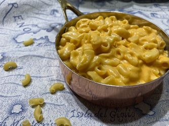

Macaroni

Description
The movie "Home Alone" served as inspiration to this macaroni and cheese. Although it says it's meant for one, it
will serve two if you're feeling generous!
Ingredients
- 1 cup elbow macaroni
- 2 tablespoons butter
- 1 tablespoon all-purpose flour
- ¾ cup fat-free half-and-half
- ¾ cup shredded sharp Cheddar cheese
- ½ teaspoon salt
- ¼ teaspoon Worcestershire sauce
- ¼ teaspoon dry mustard powder
- 1 pinch ground black pepper
- 1 pinch ground turmeric
Directions
- Bring a large pot of lightly salted water to a boil. Cook elbow macaroni in the boiling water, stirring
occasionally, until tender yet firm to the bite, about 8 minutes.
- Meanwhile, melt butter in a saucepan over medium heat. Stir in flour until mixture is smooth. Slowly add
half-and-half, whisking as it is poured in. Stir until sauce thickens slightly, about 3 minutes. Add Cheddar
cheese, salt, Worcestershire sauce, mustard, pepper, and turmeric; whisk to combine.
- Drain macaroni and add to the cheese sauce. Stir until evenly coated.